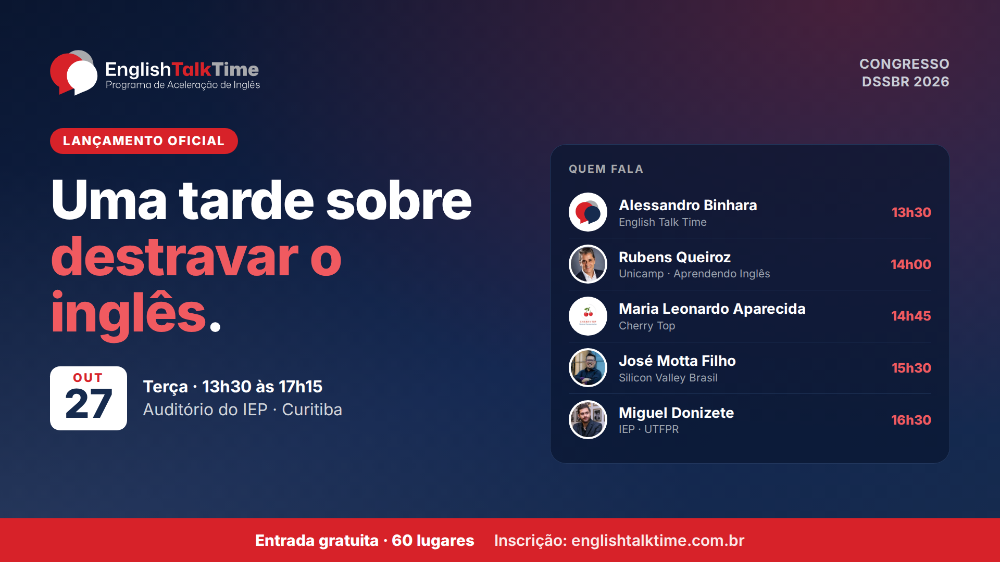
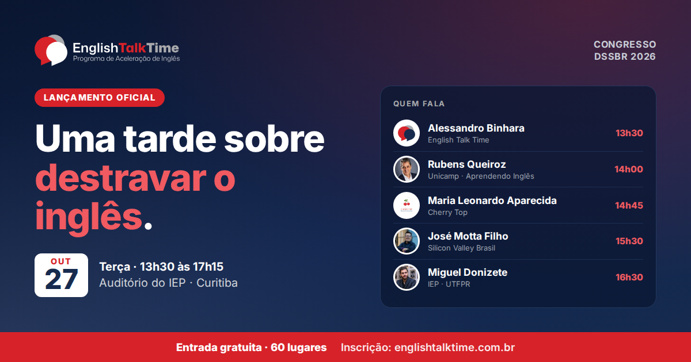
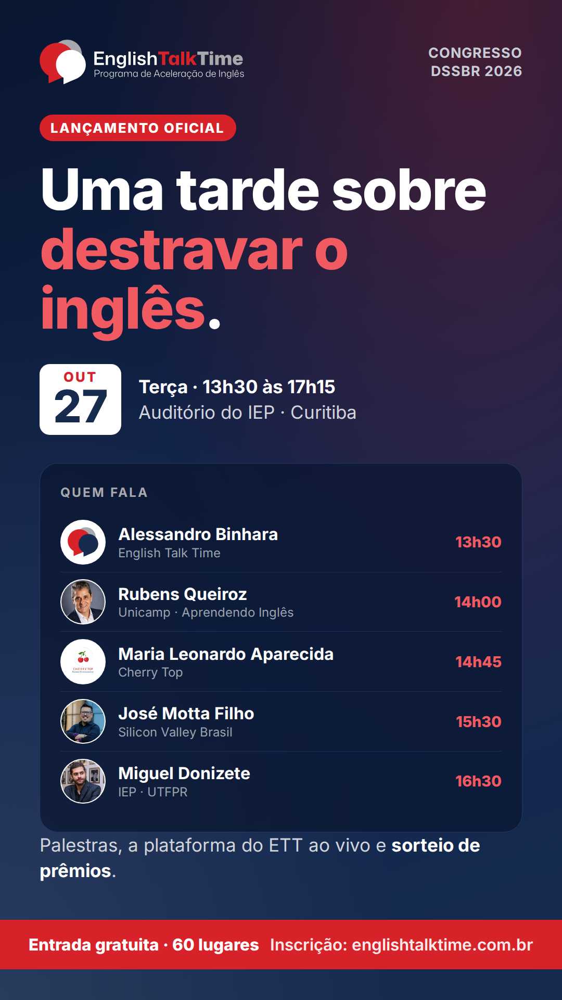

Uma tarde sobre destravar o inglês, no auditório do IEP, dentro do Congresso DSSBR 2026:
lançamento do ETT, palestras da Unicamp, Cherry Top e Silicon Valley Brasil, IEP Talks e
sorteio de prêmios. Aqui estão as artes, os textos por rede, o e-mail e o lembrete da véspera.
O formulário é onde a pessoa se inscreve. O site é o link que se cola quando a
ideia é mostrar a programação: no LinkedIn e no WhatsApp ele aparece com a arte do lançamento.
Não cole o link deste kit nas redes — ele é noindex e não gera prévia.
Antes de postar: as hashtags são sugestão — #EnglishTalkTime ainda não foi
confirmada como oficial. E a Maria Leonardo Aparecida aparece com a logo da Cherry Top porque
ainda não temos a foto dela; quando chegar, as artes são regeradas com um comando.
02Artes
Identidade nova (marinho, vermelho e prata). A prévia 1200×630 é a mesma que aparece quando
alguém compartilha o link do site.

Banner 16:91920×1080 · capa de post, LinkedIn
Baixar PNGWebP

Prévia de link1200×630 · já é a prévia da home
Baixar PNG
Feed 4:51080×1350 · maior alcance no Instagram
Baixar PNG

Story 9:161080×1920 · stories e status do WhatsApp
Baixar PNG
03Textos prontos
Só fatos: data, local, quem fala, entrada gratuita e os 60 lugares — sem "últimas vagas" nem
promessa de resultado. O último bloco é o lembrete pra mandar aos inscritos no dia 26/10.
LinkedIninstitucional · o link do site gera a prévia com a arte
🎤 Terça, 27 de outubro, 13h30: lançamento oficial do English Talk Time, no auditório do IEP, em Curitiba — dentro do Congresso DSSBR 2026.
Uma tarde sobre por que a gente trava pra falar inglês e o que ajuda a destravar:
• 13h30 — Lançamento do ETT, com Alessandro Binhara
• 14h00 — Rubens Queiroz (Unicamp, criador do portal Aprendendo Inglês): Por que você desiste do inglês?
• 14h45 — Maria Leonardo Aparecida (Cherry Top): Seu inglês está pronto para o mundo?
• 15h30 — José Motta Filho (Silicon Valley Brasil): AI para além dos prompts
• 16h30 — IEP Talks, com Miguel Donizete (IEP · UTFPR)
No encerramento, a apresentação da plataforma do ETT e sorteio de prêmios.
A entrada é gratuita, com inscrição: são 60 lugares abertos ao público. Quem já está inscrito no DSSBR também está convidado.
Inscrição: https://forms.gle/aTbkieevUxouRU6e8
Programação completa: https://englishtalktime.com.br
#EnglishTalkTime #DSSBR #inglês #Curitiba #inglesparatech
Instagramfeed · link na bio
🎤 27/10 tem lançamento do English Talk Time — e você está convidado.
Uma tarde no auditório do IEP, em Curitiba, sobre destravar o inglês: Rubens Queiroz (Unicamp), Maria Leonardo Aparecida (Cherry Top), José Motta Filho (Silicon Valley Brasil) e o IEP Talks com Miguel Donizete. No fim, a plataforma do ETT ao vivo e sorteio de prêmios.
📅 Terça, 27/10, 13h30 às 17h15
📍 Auditório do IEP · Rua Emiliano Perneta, 174 · Centro
🎟️ Entrada gratuita com inscrição · 60 lugares abertos ao público
Inscrição pelo link na bio.
.
.
#EnglishTalkTime #DSSBR #inglês #Curitiba #inglesemcuritiba #praticaringlês #inglesparatech
WhatsApp / Telegramencaminhável
🎤 *Lançamento do English Talk Time — terça, 27/10, 13h30*
Uma tarde sobre destravar o inglês, no auditório do IEP (Curitiba), dentro do Congresso DSSBR 2026. Palestras da Unicamp, Cherry Top e Silicon Valley Brasil, IEP Talks e sorteio de prêmios.
Entrada gratuita, 60 lugares abertos ao público.
Inscrição: https://forms.gle/aTbkieevUxouRU6e8
Programação: https://englishtalktime.com.br
X / Twitterdentro dos 280
🎤 27/10, 13h30: lançamento do English Talk Time no auditório do IEP, em Curitiba (Congresso DSSBR 2026). Uma tarde sobre destravar o inglês + sorteio de prêmios. Entrada gratuita, 60 lugares. Inscrição: https://forms.gle/aTbkieevUxouRU6e8 #EnglishTalkTime
Repost1ª pessoa · palestrantes, parceiros e equipe
Dia 27 de outubro vou estar no lançamento do English Talk Time, no auditório do IEP, em Curitiba — dentro do Congresso DSSBR 2026.
É uma tarde inteira sobre por que a gente trava no inglês e o que ajuda a destravar, com palestras, o IEP Talks e sorteio de prêmios no fim. A entrada é gratuita, com inscrição (60 lugares abertos ao público).
Se você está em Curitiba, vem: https://forms.gle/aTbkieevUxouRU6e8
Lembrete da véspera26/10 · pros inscritos do Google Forms, por WhatsApp ou e-mail
📍 *É amanhã: lançamento do English Talk Time*
Terça, 27/10, a partir das 13h30, no auditório do IEP — Rua Emiliano Perneta, 174, Centro, Curitiba.
13h30 Lançamento do ETT · 14h00 Rubens Queiroz · 14h45 Maria Leonardo Aparecida · 15h30 José Motta Filho · 16h30 IEP Talks
No encerramento: apresentação da plataforma do ETT e sorteio de prêmios.
Como chegar: https://www.google.com/maps/search/?api=1&query=Instituto+de+Engenharia+do+Paran%C3%A1+Rua+Emiliano+Perneta+174+Curitiba
Até amanhã!
04E-mail (RD Station)
Abra email.html, use “ver código-fonte”, copie tudo e
cole em RD Station → E-mails → Criar e-mail → Código HTML. Sugestões de assunto no
comentário do topo do arquivo. O descadastro é inserido pela RD — não duplique.
Pra quem mandar: a base da RD é o público mais quente pra encher os 60 lugares — quem
já pediu informações sobre o ETT. Os inscritos no lançamento ficam só no Google Forms; o
lembrete da véspera (bloco acima) vai pra eles por fora da RD.